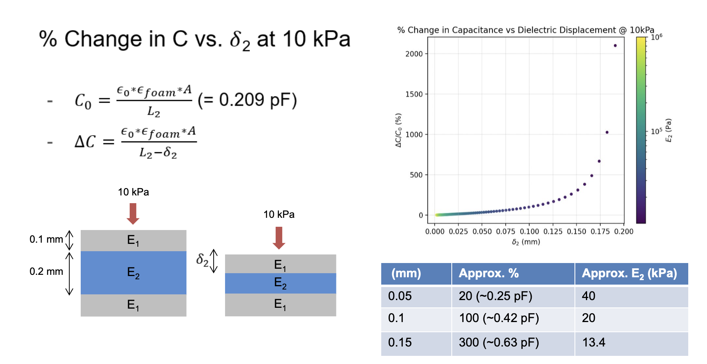
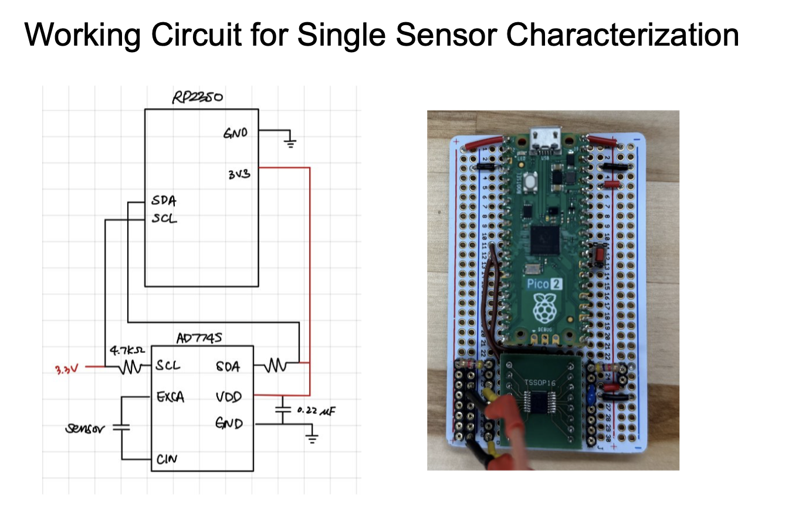
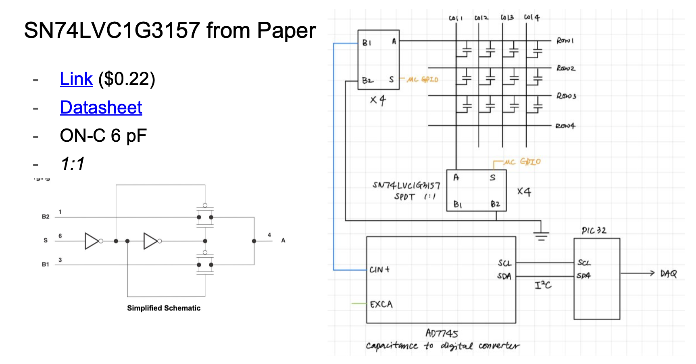
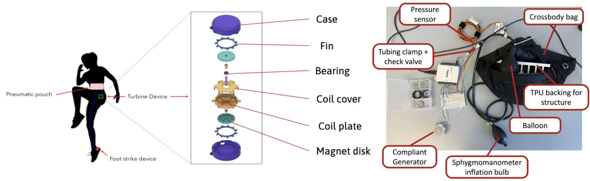
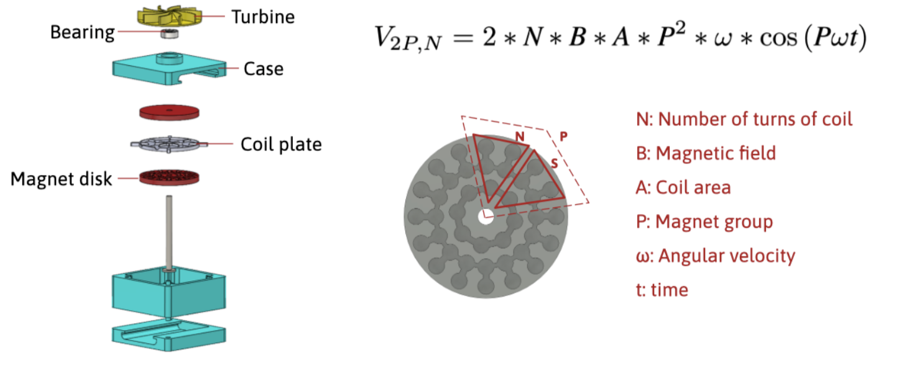
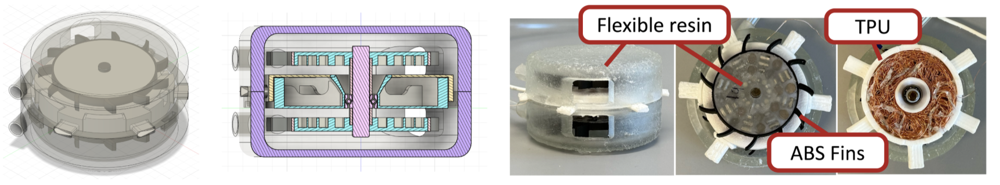

Research
Flexible Tactile Sensing Skin for Dexterous Manipulation
Building on the strict design constraints identified in our foundational research,
I am designing, fabricating, and characterizing a flexible tactile sensing skin to give robotic and human-machine interfaces high-fidelity surface awareness,
as research shows haptic feedback is crucial in effective robot manipulation.
This research bridges the gap between raw contact mechanics and real-time machine learning pipelines.
- High-Density Architecture: Developing flexible, low-profile capacitive sensor arrays optimized for spatial resolution, surface coverage, and mechanical integration onto highly curved, compliant robotic finger geometries.
- Material Stack Optimization: Testing custom dielectric and conductive material stacks to achieve a balance between conductivity, stability, and structural durability during repetitive physical interaction
- Empirical Characterization: Building bench-level test stands to evaluate sensor performance for repeatability, sensitivity thresholds, hysteresis, and signal stability under dynamic loads.
- Standardized Benchmarking: Collaborating on a multi-author institutional benchmarking paper for dexterous manipulation, multi-tier benchmarking framework to quantify robotic dexterity, structuring evaluation metrics across low-level components (eg. actuation, sensing), mid-level assemblies (eg. fingers, wrist), and high-level task execution.
Ultimately, this sensing skin provides the responsive, real-time physical feedback loop necessary to enable delicate, human-like object manipulation and tactile learning in advanced robotic systems.



Robotics • Haptics • Material Science • Embedded Systems • Hardware Testing
Foundational Research: Parameters for Haptically Transparent Interfaces
Haptic feedback is essential in natural human-to-machine training without compromising the user's tactile perception.
We initially explored existing market offerings from industry partners to determine if off-the-shelf components could satisfy our criteria for high coverage, spatial resolution, and compliance.
Because commercially available options were optimized for different operational priorities, we decided to design a custom solution.
- Explored state-of-the-art motion capture systems for both finger and object tracking, including vision-based approaches such as Apple’s EgoDex framework for hand tracking.
- Identified opportunities to design thin, flexible, and haptically transparent sensor layers that can be integrated onto the glove’s surface.
- Investigated sensing methods that detect contact occurrence (without shear force measurement at this stage) for use in robotic training and teleoperation applications.
This review and parameterization laid the foundation required to transition from theoretical constraints to physical hardware development, informing our custom tactile skin architectures.
Robotics • Human-Robot Interaction (HRI) • Embedded • Sensor Fusion
Self‑powered Wearable System
I developed a centimeter-scale permanent-magnet generator featuring a Halbach array to harvest pneumatic energy from human gait and power a microcontroller for haptic sensing and actuation.
Air captured in a soft pneumatic pouch at the waist flows through a controlled valve to drive a miniature turbine, generating electrical current.
The design emphasized compliance and skin comfort, enabling integration into wearable devices for self-powered haptic feedback.
Through iterative testing, the optimized design consistently produced over 3.3 V for more than 7 seconds and maintained above 2 V for over 20 seconds, demonstrating stable and sustained power generation suitable for wearable applications.



Mechanisms • EM • Prototyping • 3D Printing